Schematic
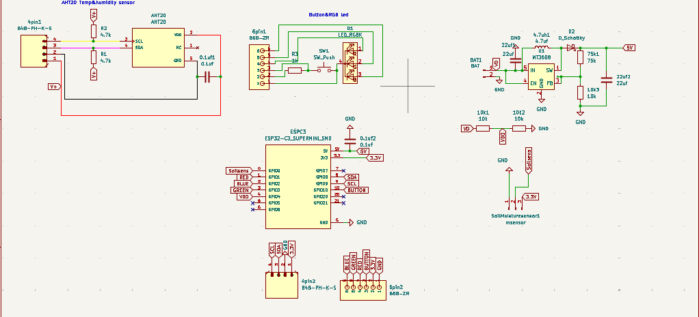
The Soil Node is built around an ESP32-C3 SuperMini. A capacitive soil moisture sensor feeds an analog input, and an AHT20 reports air temperature and humidity over I²C. An RGB LED and push button give quick status and user input. An MT3608 boost converter steps the battery up to a stable 5 V rail, so the node can run untethered in the field.
Breadboard Prototype
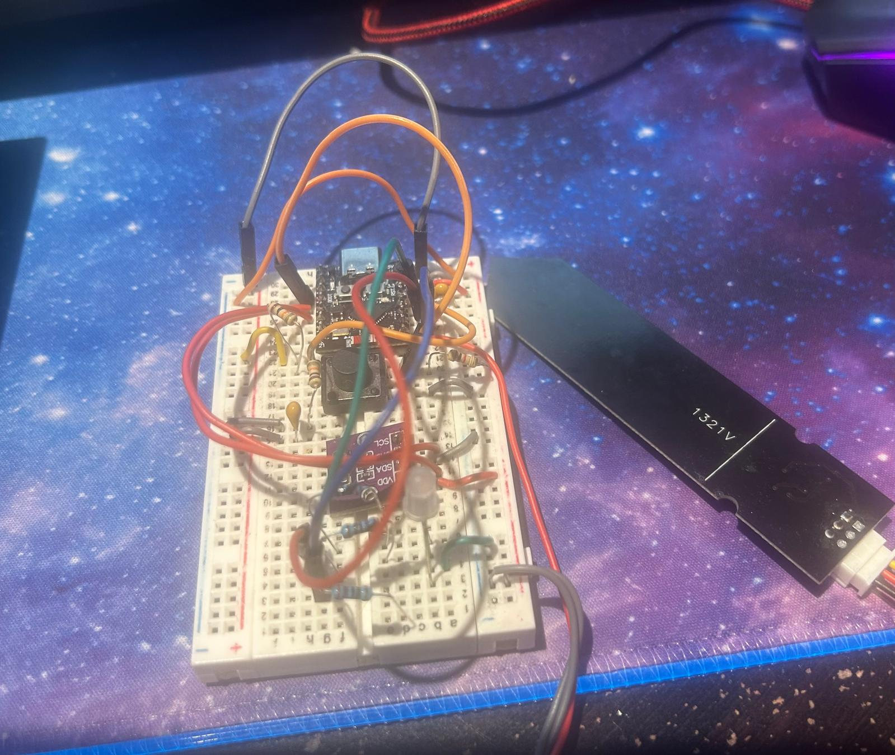
Before committing to a PCB, I wired the full circuit on a breadboard to validate the design. This let me check the sensor readings, I²C communication with the AHT20, the LED and button behavior, and the soil probe calibration, and fix wiring issues while changes were still cheap.
PCB Design
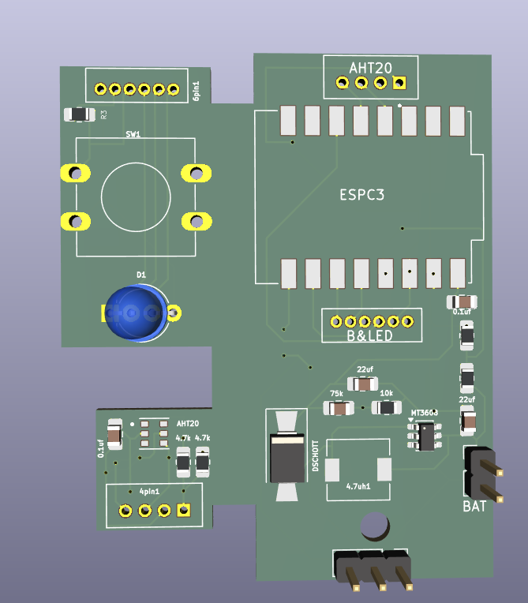
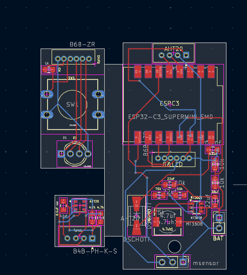
After the breadboard prototype was validated, I moved the design onto a custom PCB. The board brings the ESP32-C3, power regulation, and sensor connectors onto one compact footprint, with JST-style connectors for the soil probe and AHT20 so sensors can be swapped easily. The 3D render was used to check component fit and connector placement before ordering.
Demo
LED Colour Switching
Each node has an RGB LED so you can tell your plants apart at a glance. Pick a new colour on the dashboard, and the node picks it up the next time it wakes (within the hour, or right away if you press its button), then lights up in the new colour for 5 seconds.
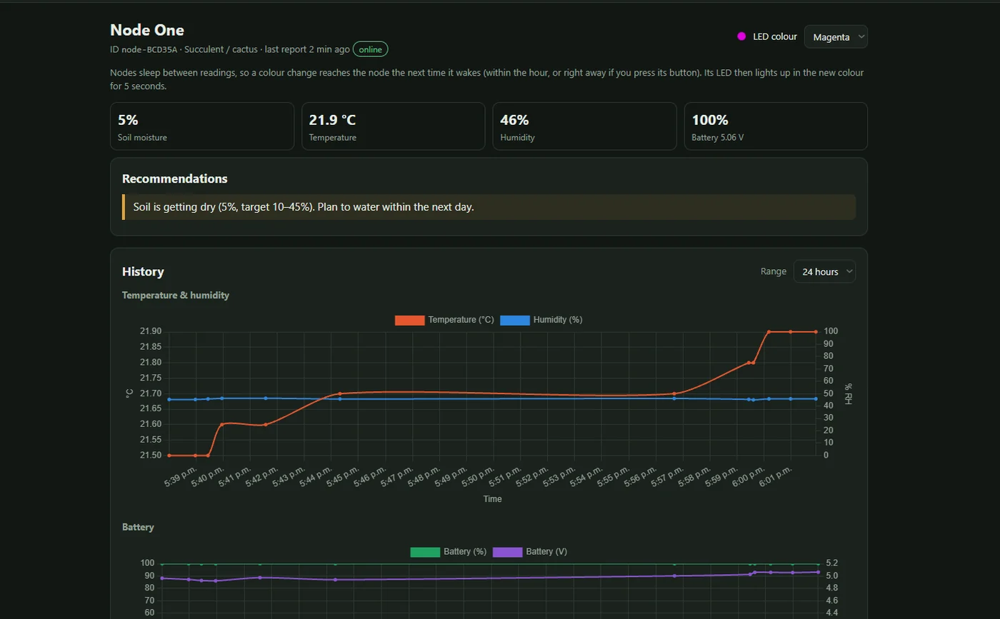
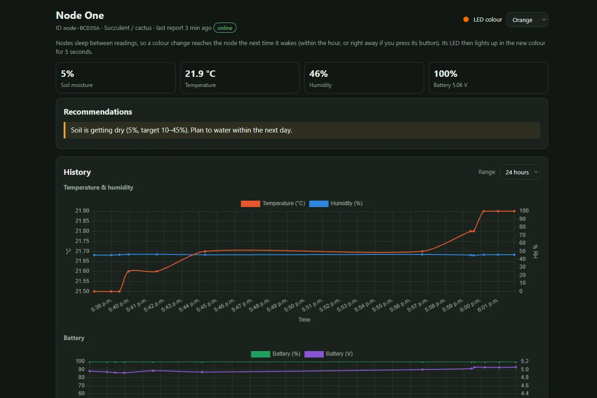
Server Dashboard
Every node reports to a small web server that stores its readings, draws history charts, gives care recommendations for the plant type, and raises alerts when something drifts out of range.
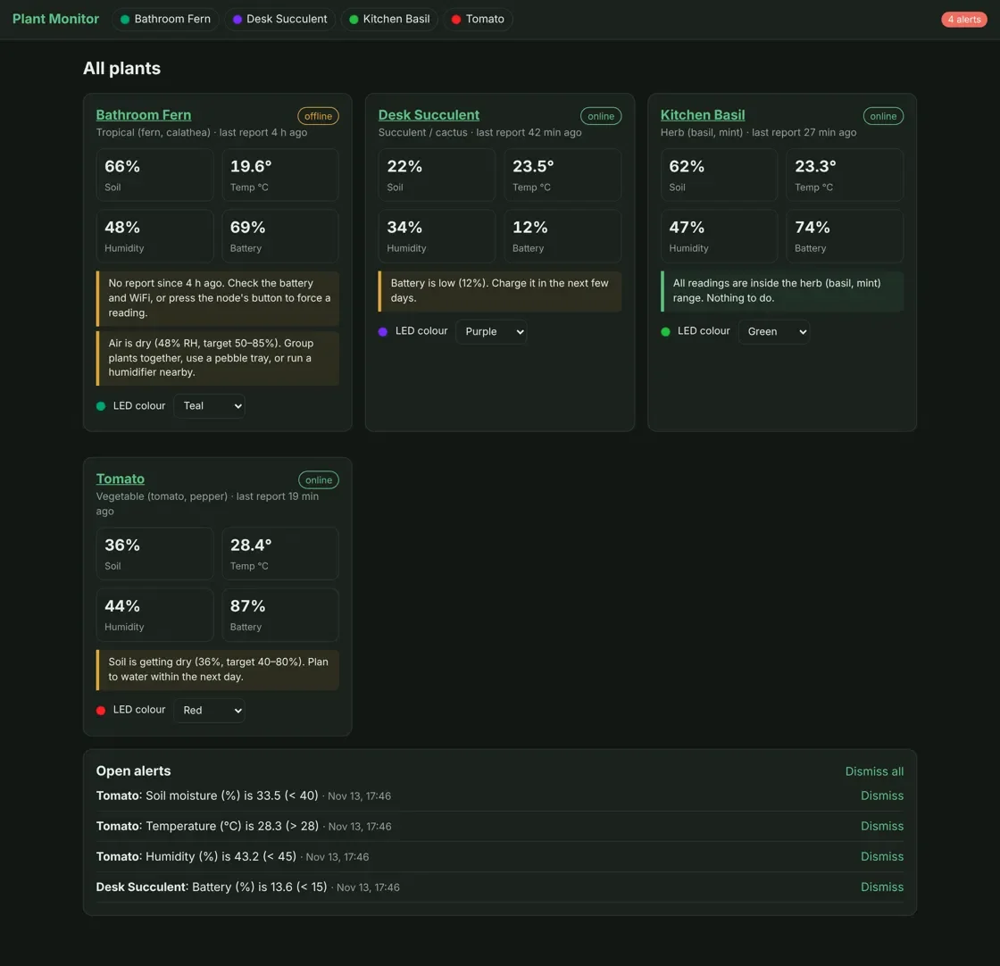
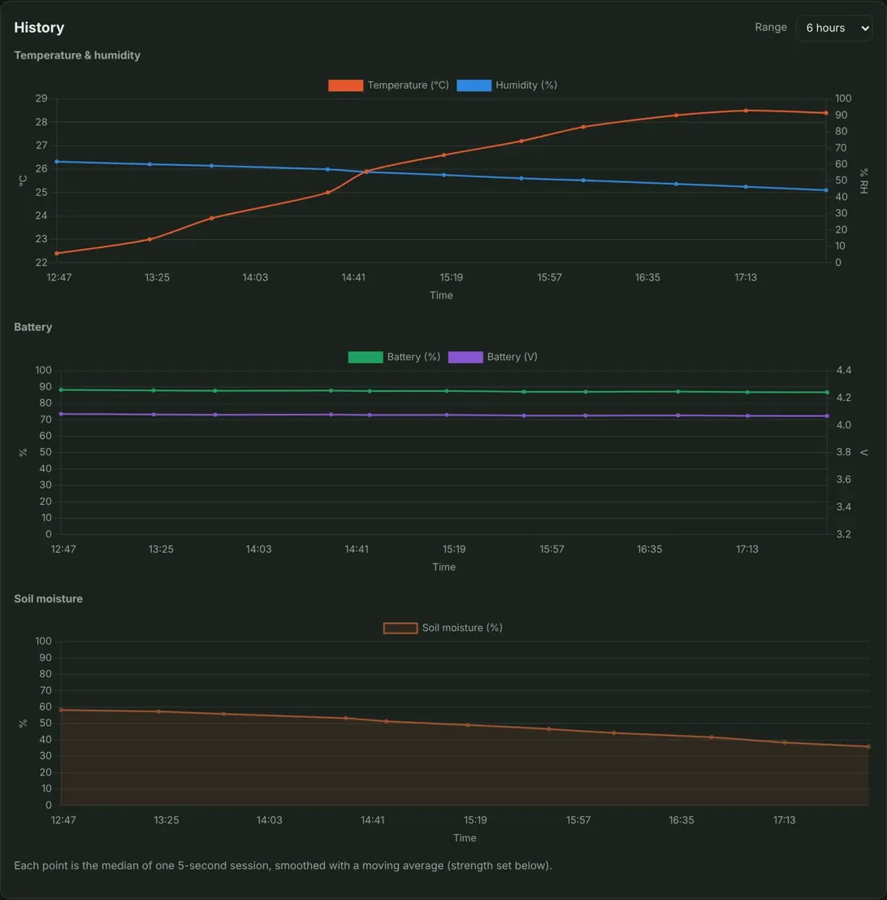
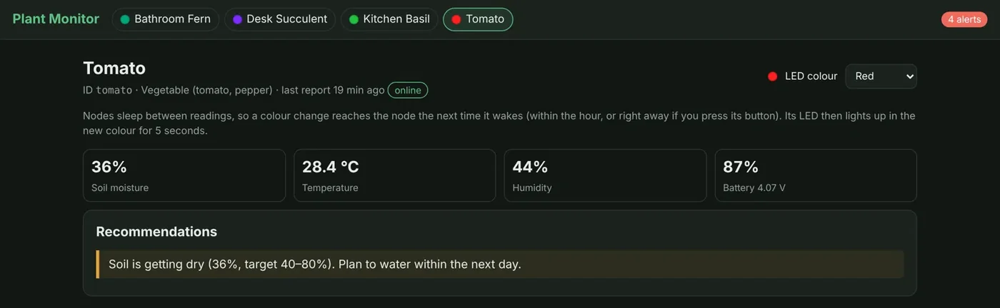
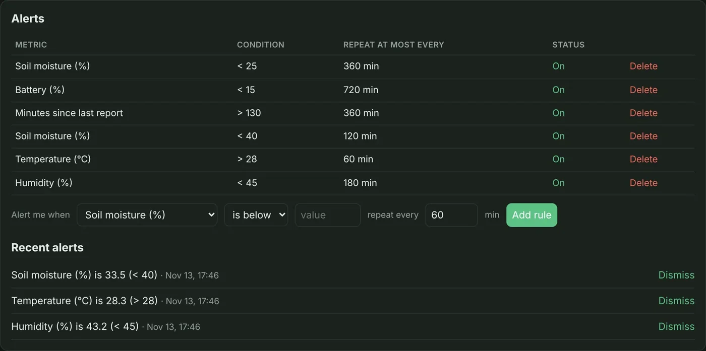
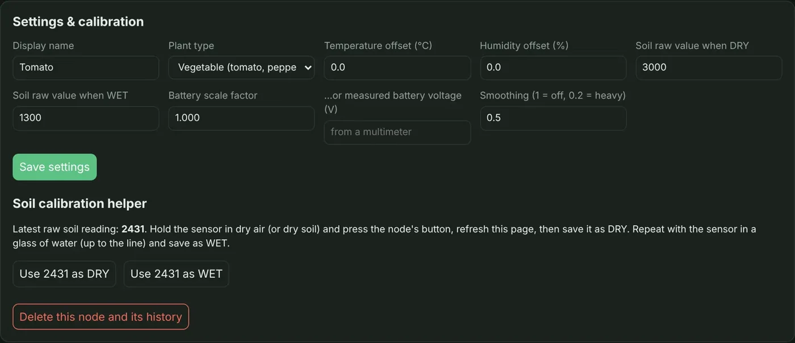
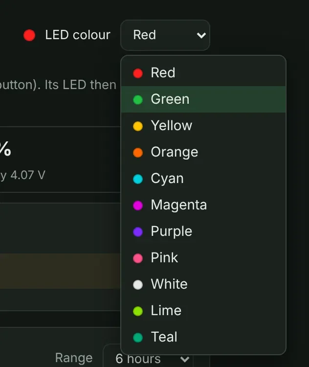
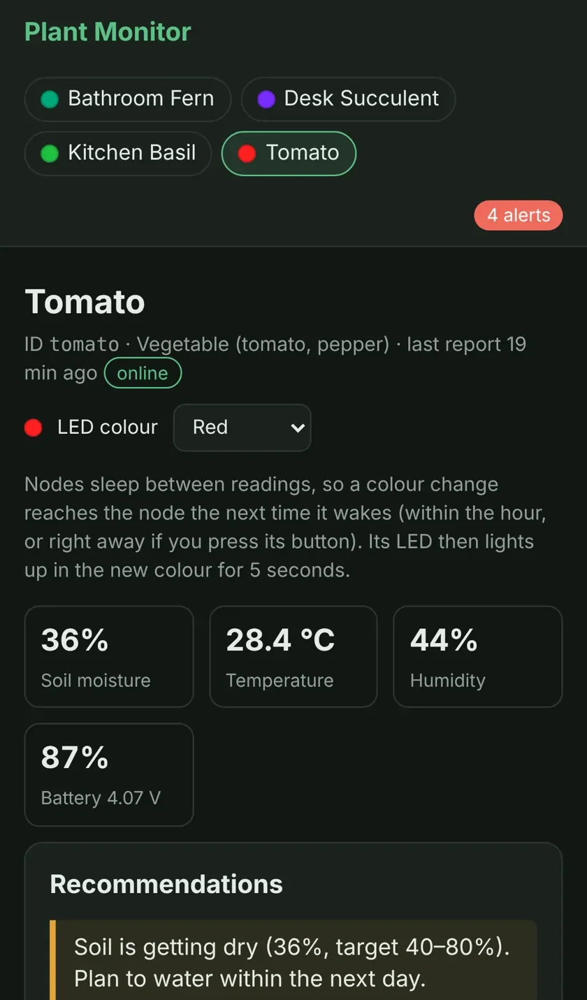
Wi-Fi Setup (Captive Portal)
No code changes are needed to set up a node. On first boot it opens its own hotspot, your phone shows a setup page, and you choose your Wi-Fi network, the server address, and a node ID. The node then saves the settings and joins your network.
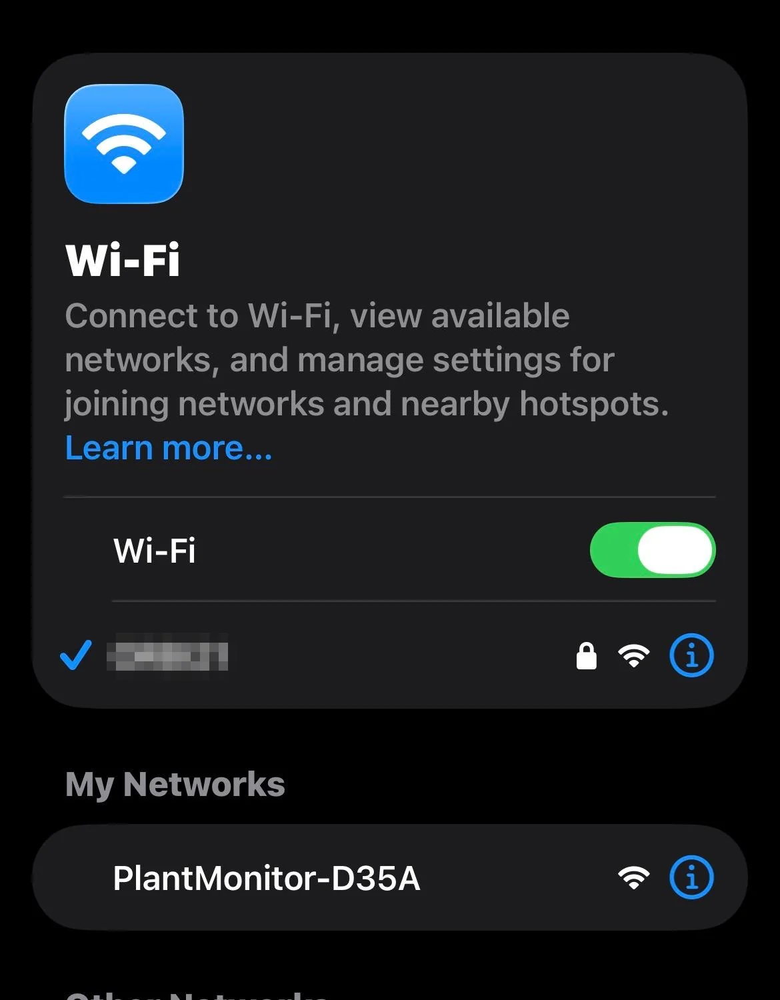
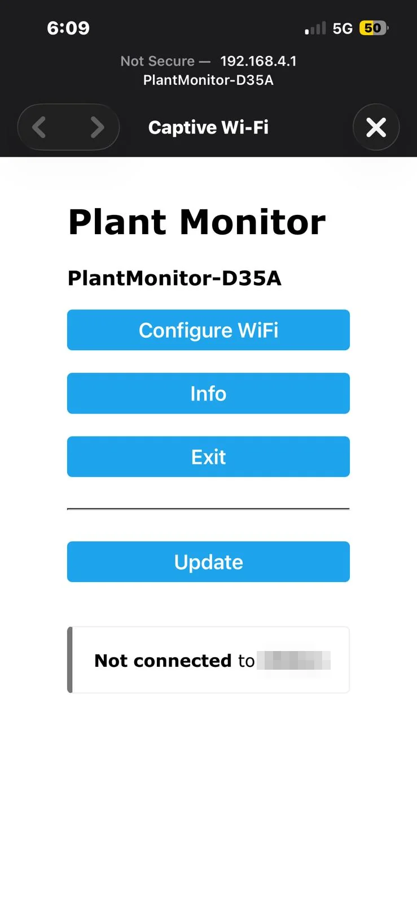
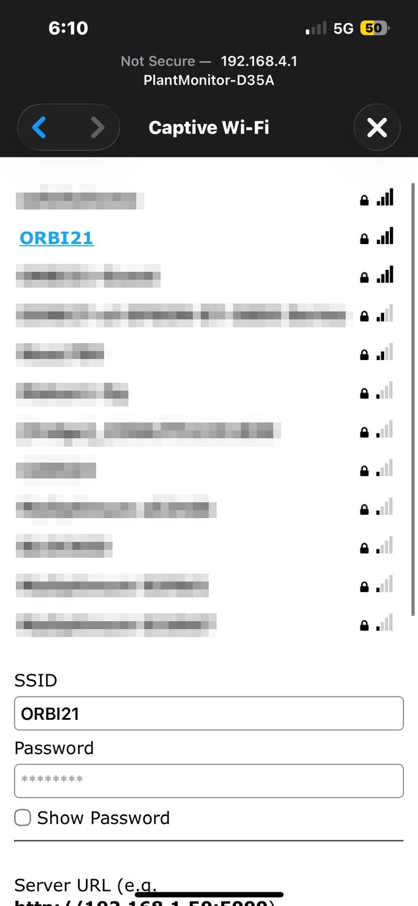
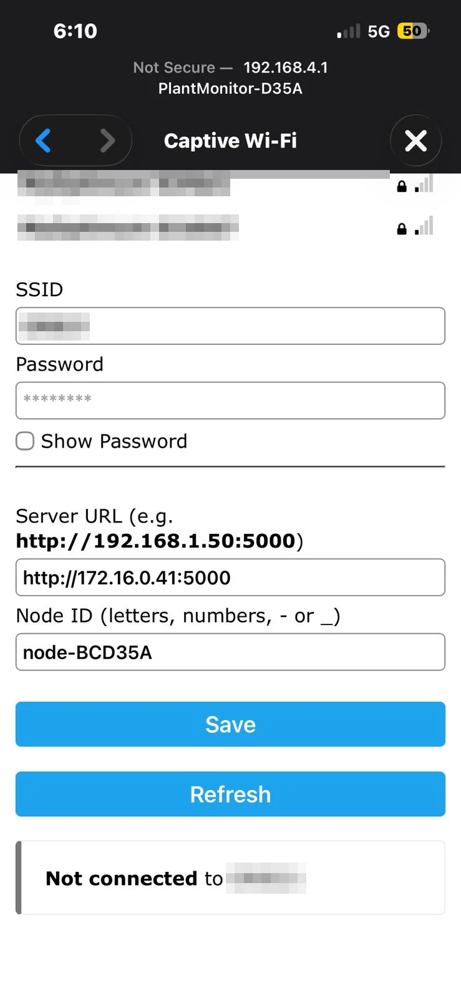
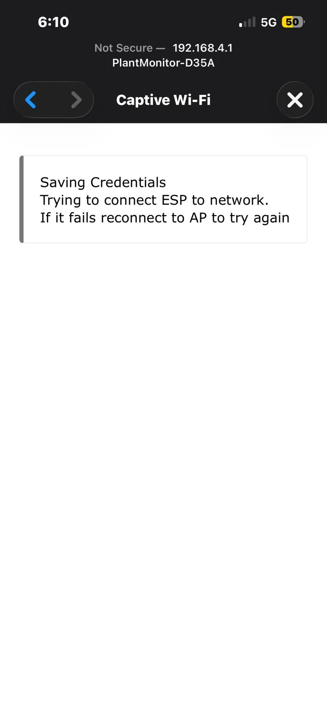
Wi-Fi network names are blurred for privacy.
Current Progress
- WaitingPCBs ordered: waiting for the boards to arrive for assembly and testing.
- In progressDesigning a casing for the node to protect the electronics in the pot.
Future Improvements
Lower power use and better Wi-Fi range, waking the node and sending it commands wirelessly, and smart home integration.
Measure the nutrients in the soil, not just moisture, so you know when to fertilize.
Ask questions about how best to care for your plant and get recommendations and tips based on its live readings.
A library of plant profiles, plus easy input fields for setting your own specific targets for each plant.
Nodes relay each other's data, so sensors can reach plants beyond your router's range.
Upload a photo of a sick plant and the AI assistant analyzes it for problems and recommends what to do.